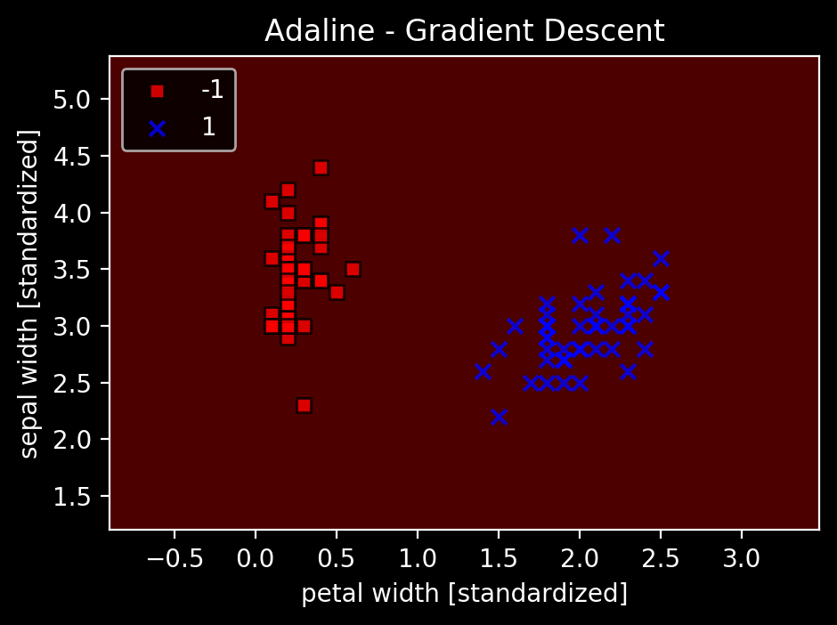

ADALINEの実装をPythonでやってみた
前回の続き
2.4 ADALINEと学習の収束
前のパーセプトロンとの違いは、 重みの更新に単位ステップ関数ではなく、線形活性化関数を用いる点
2.5 勾配降下法によるコスト関数の最小化
$$ J(\mathbf{w}) = \frac{1}{2} \sum_{i} (y^{(i)} - \phi (z^{(i)}))^2 $$
コスト関数の極小値になるように学習を進めることで、学習を収束させることができる。
ADALINEは微分可能な活性化関数を用いることと、コスト関数に誤差平方和を使い凸関数にすることで、勾配降下法を用いてコスト関数を最小化する重みを見つけることができる。
勾配降下法の原理を図にしたもの
勾配降下法を使って重みを更新するには、コスト関数 $ J(\mathbf{w}) $ の勾配 $ \nabla J(\mathbf{w}) $ に沿って逆方向に1ステップ進む
$$ \mathbf{w} := \mathbf{w} + \Delta \mathbf{w} $$
$$ \Delta \mathbf{w} = - \eta \nabla J(\mathbf{w}) $$
$$ \frac{\partial J}{\partial w_j} = - \sum_i (y^{(i)} - \phi (z^{(i)})) x_j^{(i)} $$
なので
$$ \Delta w_j = - \eta \frac{\partial J}{\partial w_j} = \eta \sum_i (y^{(i)} - \phi (z^{(i)})) x_j^{(i)} $$
2.5.1 ADALINEをPythonで実装する
ADALINEの学習規則はパーセプトロンに良く似ている。以下で実装
import numpy as np
class AdalineGD(object):
"""ADAptive LInear NEuron 分類器
パラメータ
-----------
eta : float
学習率(0.0より大きく1.0以下の値)
n_iter : int
トレーニングデータのトレーニング回数
random_state : int
重み初期化用乱数シード
属性
-----------
w_ : 1次元配列
適合後の重み
cost_ : リスト <- error_がcost_に変化
各エポックでの誤差平方和のコスト関数
"""
def __init__(self, eta=0.01, n_iter=50, random_state=1):
self.eta = eta
self.n_iter = n_iter
self.random_state = random_state
def fit(self, X, y):
"""トレーニングデータに適合される
パラメータ
------------
X : {配列のようなデータ構造}, shape = [n_samples, n_features]
トレーニングデータ
n_samplesはサンプルの個数, n_featuresは特徴量の個数
y : 配列のようなデータ構造, shape = [n_samples]
目的変数
戻り値
------------
self : object
"""
rgen = np.random.RandomState(self.random_state)
self.w_ = rgen.normal(loc=0.0, scale=0.01, size=1 + X.shape[1])
self.cost_ = []
for _ in range(self.n_iter): # トレーニング回数分トレーニングデータを反復
net_input = self.net_input(X) # パーセプトロンの実装のようにサンプルごとにループしなくても良い（なんでパーセプトロンではサンプルごとにループ回してたのかよくわからん）
# activationメソッドは単なる恒等関数であるため、
# このコードでは何の効果もない。単なる活性化関数の概念として実装。
# ロジスティック回帰の実装の場合はシグモイド関数に変更するだけで良いらしい。
output = self.activation(net_input)
# 誤差 y^(i) - φ(z^(i)) の計算
errors = y - output
# 重み w_1, ..., w_m の更新
self.w_[1:] += self.eta * X.T.dot(errors)
# 重み w_0 の更新
self.w_[0] += self.eta * errors.sum()
# コスト関数の計算
cost = (errors ** 2).sum() / 2.0
# コストの格納
self.cost_.append(cost)
return self
def net_input(self, X):
"""総入力を計算"""
return np.dot(X, self.w_[1:]) + self.w_[0] # xiでループしなくとも良い
def activation(self, X):
"""線形活性化関数の出力を計算"""
return X
def predict(self, X):
"""1ステップ後のクラスラベルを返す"""
return np.where(self.activation(self.net_input(X)) >= 0.0, 1, -1)
パーセプトロンの時のうまく分類できたデータで試す。
import numpy as np
from sklearn.datasets import load_iris
import pandas as pd
iris = load_iris()
df = pd.DataFrame(iris.data, columns=iris.feature_names)
df['target'] = iris.target
df2 = df.query("target != 1").copy() # label 1を除外
df2["target"] -= 1 # ラベルを1と-1に揃える
X = df2[['petal width (cm)', 'sepal width (cm)']].values
Y = df2['target'].values
import matplotlib.pyplot as plt
fig, ax = plt.subplots(nrows=1, ncols=2, figsize=(10, 4))
ada1 = AdalineGD(n_iter=10, eta=0.01).fit(X, Y)
ax[0].plot(range(1, len(ada1.cost_)+1), np.log10(ada1.cost_), marker='o')
ax[0].set_xlabel('Epochs')
ax[0].set_ylabel('log(Sum-squared-error)')
ax[0].set_title('Adaline - Learning rate 0.01')
ada2 = AdalineGD(n_iter=10, eta=0.0001).fit(X, Y)
ax[1].plot(range(1, len(ada2.cost_)+1), ada2.cost_, marker='o')
ax[1].set_xlabel('Epochs')
ax[1].set_ylabel('Sum-squared-error')
ax[1].set_title('Adaline - Learning rate 0.0001')
Text(0.5, 1.0, 'Adaline - Learning rate 0.0001')
←は学習率0.01の場合のエポック数に対しての誤差平方和のlogをとったもの、 →は0.0001の時のエポック数に対しての誤差平方和
ηをうまく選択しないと、うまく収束しないことがわかる。
学習率が大きいと、図のように極小値を目指すが極小値を飛び超えて対岸に登ってしまう。
2.5.2 特徴量のスケーリングを通じて勾配降下法を改善する
機械学習アルゴリズムの最適なパフォーマンスのために特徴量のスケーリングを行う。
今回は標準化 $ \mathbf{x}’_j = \frac{\mathbf{x}_j - \mu_j}{\sigma_j} $
これによりデータに標準正規分布の特性を与え、学習を素早く収束させる。
# 標準化
X_std = np.copy(X)
X_std[:, 0] = (X[:, 0] - X[:, 0].mean()) / X[:, 0].std()
X_std[:, 1] = (X[:, 1] - X[:, 1].mean()) / X[:, 1].std()
from sklearn import preprocessing
ss = preprocessing.StandardScaler()
X_std2 = ss.fit_transform(X)
print(X_std[:3])
print(X_std2[:3]) # 同じ
[[-1.02461719 0.71907625]
[-1.02461719 -0.4833924 ]
[-1.02461719 -0.00240494]]
[[-1.02461719 0.71907625]
[-1.02461719 -0.4833924 ]
[-1.02461719 -0.00240494]]
# 前に実装した境界プロットの関数
from matplotlib.colors import ListedColormap
def plot_decision_regions(X, y, classifier, resolution=0.02):
# マーカーとカラーマップの準備
markers = ('s', 'x', 'o', '^', 'v')
colors = ('red', 'blue', 'lightgreen', 'gray', 'cyan')
cmap = ListedColormap(colors[:len(np.unique(y))])
# 決定領域のプロット
x1_min, x1_max = X[:, 0].min() - 1, X[:, 0].max() + 1
x2_min, x2_max = X[:, 1].min() - 1, X[:, 1].max() + 1
# グリッドポイントの生成
xx1, xx2 = np.meshgrid(np.arange(x1_min, x1_max, resolution),
np.arange(x2_min, x2_max, resolution))
# 各特徴量を1次元配列に変換して予測を実行
Z = classifier.predict(np.array([xx1.ravel(), xx2.ravel()]).T)
# 予測結果を元のグリッドポイントのデータサイズに変換
Z = Z.reshape(xx1.shape)
# グリッドポイントの等高線のプロット
plt.contourf(xx1, xx2, Z, alpha=0.3, cmap=cmap)
# 軸の範囲の設定
plt.xlim(xx1.min(), xx1.max())
plt.ylim(xx2.min(), xx2.max())
# クラスごとにサンプルをプロット
for idx, cl in enumerate(np.unique(y)):
plt.scatter(x=X[y == cl, 0],
y=X[y == cl, 1],
alpha=0.8,
c=colors[idx],
marker=markers[idx],
label=cl,
edgecolor='black')
ada = AdalineGD(n_iter=15, eta=0.01)
ada.fit(X_std, Y)
plot_decision_regions(X_std, Y, classifier=ada)
plt.title('Adaline - Gradient Descent')
plt.xlabel('petal width [standardized]')
plt.ylabel('sepal width [standardized]')
plt.legend(loc='upper left')
plt.tight_layout()
plt.show()
plt.plot(range(1, len(ada.cost_) + 1), ada.cost_, marker='o')
plt.xlabel('Epochs')
plt.ylabel('Sum-squared-error')
plt.tight_layout()
plt.show()
収束し、分類の境界がしっかり引けているのがわかる。
同じ学習率で先ほどうまく収束していなかったことからも、標準化の効果が出ていることも確認可能。
ada1 = AdalineGD(n_iter=15, eta=0.01)
ada1.fit(X, Y)
plot_decision_regions(X, Y, classifier=ada1)
plt.title('Adaline - Gradient Descent')
plt.xlabel('petal width [standardized]')
plt.ylabel('sepal width [standardized]')
plt.legend(loc='upper left')
plt.tight_layout()
plt.show()
plt.plot(range(1, len(ada1.cost_) + 1), ada1.cost_, marker='o')
plt.xlabel('Epochs')
plt.ylabel('Sum-squared-error')
plt.tight_layout()
plt.show()

↑標準化してないデータでやってみてもやっぱりダメでした。
あとは、前回分類できてなかったデータでやってみる。
import numpy as np
import matplotlib.pyplot as plt
df3 = df.query("target != 0").copy() # label 0を除外
y = df3.iloc[:, 4].values
y = np.where(y == 1, -1, 1) # label 1を-1に、その他（label 2）を1にする
# plt.scatter(df3.iloc[:50, 1], df3.iloc[:50, 0], color='orange', marker='o', label='versicolor')
# plt.scatter(df3.iloc[50:, 1], df3.iloc[50:, 0], color='green', marker='o', label='virginica')
# plt.xlabel('sepal width [cm]')
# plt.ylabel('sepal length [cm]')
# plt.legend(loc='upper left')
# plt.show()
X2 = df3[['sepal width (cm)', 'sepal length (cm)']].values
from sklearn import preprocessing
sc = preprocessing.StandardScaler()
X2_std = sc.fit_transform(X2)
ada2 = AdalineGD(n_iter=15, eta=0.01)
ada2.fit(X2_std, y)
plot_decision_regions(X2_std, y, classifier=ada2)
plt.title('Adaline - Gradient Descent')
plt.xlabel('sepal width [standardized]')
plt.ylabel('sepal length [standardized]')
plt.legend(loc='upper left')
plt.tight_layout()
plt.show()
plt.plot(range(1, len(ada2.cost_) + 1), ada2.cost_, marker='o')
plt.xlabel('Epochs')
plt.ylabel('Sum-squared-error')
plt.tight_layout()
plt.show()
線形で完全に分離できることは当然ないが、妥当な位置に境界を引けているので、コストの極小値に収束したのだろう。
2.6 大規模な機械学習と確率的勾配降下法
データ数が多いとここまでの方法（バッチ勾配降下法）は計算コストが高くなる。
→確率的勾配降下法を使う
$$ \Delta \mathbf{w} = \eta \sum_i (y^{(i)} - \phi (z^{(i)})) \mathbf{x}^{(i)} $$
でなく、サンプルごとに段階的に重みを更新する
$$ \eta (y^{(i)} - \phi (z^{(i)})) \mathbf{x}^{(i)} $$
サンプルはランダムな順序に並び替えることが重要。 この方法のメリットは、高速に収束すること、浅い極小値を簡単に抜け出せること（誤差曲面のノイズが多い）、オンライン学習に利用できること。
オンライン学習…新しいトレーニングデータが届いたときに、その場でトレーニングしモデルを更新する。素早く変化に適応できる。
以下で確率的勾配降下法を用いてADALINEを実装
import numpy as np
from numpy.random import seed
class AdalineSGD(object):
"""ADAptive LInear NEuron 分類器
パラメータ
-----------
eta : float
学習率(0.0より大きく1.0以下の値)
n_iter : int
トレーニングデータのトレーニング回数
shuffle : bool (デフォルトTrue)
Trueの場合は循環を回避するためにエポックごとにトレーニングデータをシャッフル
random_state : int
重み初期化用乱数シード
属性
-----------
w_ : 1次元配列
適合後の重み
cost_ : リスト
各エポックで全てのトレーニングサンプルの平均を求める誤差平方和コスト関数
"""
def __init__(self, eta=0.01, n_iter=10, shuffle=True, random_state=None):
self.eta = eta
self.n_iter = n_iter
self.w_initialized = False # 重みの初期化フラグ
self.shuffle = shuffle
self.random_state = random_state
def fit(self, X, y):
"""トレーニングデータに適合される
パラメータ
------------
X : {配列のようなデータ構造}, shape = [n_samples, n_features]
トレーニングデータ
n_samplesはサンプルの個数, n_featuresは特徴量の個数
y : 配列のようなデータ構造, shape = [n_samples]
目的変数
戻り値
------------
self : object
"""
# 重みベクトルの生成
self._initialize_weights(X.shape[1])
self.cost_ = []
# トレーニング回数分反復
for i in range(self.n_iter):
# 指定された場合はトレーニングデータをシャッフル
if self.shuffle:
X, y = self._shuffle(X, y)
# 各サンプルのコストを格納するリストの生成
cost = []
# 各サンプルに対する計算
for xi, target in zip(X, y):
# 特徴量xiと目的変数yを用いた重みの更新とコストの計算
cost.append(self._update_weights(xi, target))
# サンプルの平均コストの計算
avg_cost = sum(cost)/len(y)
# 平均コストの格納
self.cost_.append(avg_cost)
return self
def partial_fit(self, X, y):
"""重みを再初期化することなくトレーニングデータに適合させる"""
# 初期化されていない場合は初期化を実行
if not self.w_initialized:
self._initialize_weights(X.shape[1])
# 目的変数yの要素数が2以上の場合は
# 各サンプルの特徴量xiとtargetで重みを更新
if y.ravel().shape[0] > 1:
for xi, target in zip(X, y):
self._update_weights(xi, target)
# 目的変数yの要素数が1の場合は
# サンプル全体の特徴量Xと目的変数yで重みを更新
else:
self._update_weights(X, y)
return self
def _shuffle(self, X, y):
"""トレーニングデータをシャッフル"""
r = self.rgen.permutation(len(y))
return X[r], y[r] # インデックスに配列を渡すことでシャッフルを実現できる
def _initialize_weights(self, m):
"""重みを小さな乱数に初期化"""
self.rgen = np.random.RandomState(self.random_state)
self.w_ = self.rgen.normal(loc=0.0, scale=0.01, size=1 + m)
self.w_initialized = True
def _update_weights(self, xi, target):
"""ADALINEの学習規則を用いて重みを更新"""
# 活性化関数の出力の計算
output = self.activation(self.net_input(xi))
# 誤差の計算
error = target - output
# 重みの更新
self.w_[1:] += self.eta * xi.dot(error)
self.w_[0] += self.eta * error
# コストの計算
cost = 0.5 * error**2
return cost
def net_input(self, X):
"""総入力を計算"""
return np.dot(X, self.w_[1:]) + self.w_[0]
def activation(self, X):
"""線形活性化関数の出力を計算"""
return X
def predict(self, X):
"""1ステップ後のクラスラベルを返す"""
return np.where(self.activation(self.net_input(X)) >= 0.0, 1, -1)
ada = AdalineSGD(n_iter=15, eta=0.01, random_state=1)
ada.fit(X_std, y)
plot_decision_regions(X_std, y, classifier=ada)
plt.title('Adaline - Stochastic Gradient Descent')
plt.xlabel('petal width [standardized]')
plt.ylabel('sepal width [standardized]')
plt.legend(loc='upper left')
plt.tight_layout()
plt.show()
plt.plot(range(1, len(ada.cost_) + 1), ada.cost_, marker='o')
plt.xlabel('Epochs')
plt.ylabel('Average Cost')
plt.show()

すぐに平均コストが減少している。境界はバッチ勾配降下法と同じ。
オンライン学習の場合はpartial_fitを呼び出すと更新ができる。
パーセプトロンとADALINEを学んで、かなり理解が深まったので、今後他の機械学習アルゴリズムはこの応用で理解がしやすくなると思う。
今までは他のアルゴリズムもブラックボックスのまま使っていたので、中身を知ることができたのは良かった。
サイゼミに向けて多層パーセプトロンとニューラルネットの話を見たいのでこの本は一旦12章まで飛んで、読んでいく。 多分実装は間に合わないので、読むまでにとどめる。
Gistにnotebookを置いています。
（概念図等は前回同様『Python 機械学習プログラミング 達人データサイエンティストによる理論と実践』第二章より引用しています。）